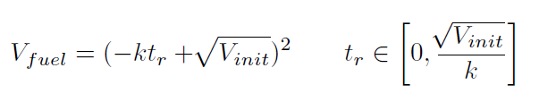

You can download SMTPlan with all benchmarks using the download link at the top. You can also view the benchmarks on GitHub here:
https://github.com/KCL-Planning/SMTPlan/tree/master/benchmarks
PDDL+ benchmarks
Linear Generator
The generator domain is a PDDL+ benchmark problem that revolves around refueling a diesel-powered generator, which has to run for a given duration without overflowing or running dry.To test scalability the number of tanks is increased while decreasing the initial fuel level.
Non-linear Generator
Generator (Toricelli)
This version uses the Torricelli’s Law, and hence the fuel level in a refuelling tank (Vfuel) is calculated by:
where V init is the initial volume of fuel in the tank, k is the fuel flow constant (which depends on gravity, size of the drain hole, and the cross-section of the tank), and tr is the time of refueling (bounded by the fuel level and the flow constant).
Here is an example of plan found by SMTPlan+ for the Torricelli nonlinear generator:
0.0: generate [1000.0]
959.0: refuel_tank1 [10.0]
959.0: refuel_tank2 [10.0]
Linear Car
The car domain is another PDDL+ benchmark (Fox and Long 2006) where a vehicle has to cover a given distance and have a zero velocity at the end, and the actions available are accelerate and decelerate that increments or decrements by 1 the current velocity, respectively.To test scalability, the bound on maximum acceleration/deceleration is increased.